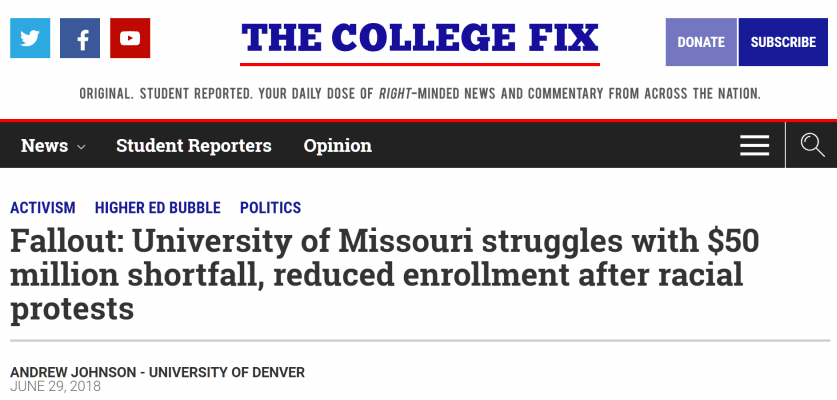

This account syndicates news from other media outlets.


An African-American graduate student at the University of Missouri was suspended after asking a white woman on a date. He had been previously accused of sexual misconduct, but was found not responsible. He claims an administrator told him during the first investigation that he “looked like someone who might commit sexual assault.”
He was never accused of sexual assault.
The student, identified in court documents as John Doe, was a doctoral candidate in Cultural Anthropology, and took dance fitness classes at the Student Recreation Center. During the 2015-2016 school year, John developed what he thought was a friendship with a female fitness class instructor (The Daily Wire is not naming her since it is not naming the accused student). John asked the instructor on a date in April 2016, and claims she said she was busy but discussed going out later that month. On April 18, she sent John a message asking him “to stop making romantic advances toward her,” according to his lawsuit. She did, however, indicate that she still wanted him to attend her dance classes and wanted their friendship to remain professional.

John apologized and said he would keep their relationship professional. That fall, he asked the instructor to recommend YouTube videos that could help him improve his dance technique. She suggested he take private lessons, but that she did not teach private lessons. For the next week, the instructor avoided John during her classes.
On October 14, 2016, John gave the instructor a three-page letter “apologizing for being awkward around her, expressing sincere feelings for her, and asking [her] what if anything she wanted from Plaintiff,” according to his lawsuit.
After this, Rec Center Associate Director Emily Bach McElwaine told Mizzou’s Title IX office that John had harassed and stalked four women who worked at the rec center, including the instructor. She apparently sent in allegations on behalf of three other women.
On October 20, the instructor was interviewed and said that John’s communications were “bizarre” and made her “uncomfortable.” On November 7, 2016, Title IX investigator Amber Lammers sent John a notice that he was being investigated for sexual harassment and stalking. John said during his interview with Lammers that he was concerned about the involvement of Salama Gallimore, who had, according to John, told him during a previous Title IX investigation that he “looked like someone who might commit sexual assault.” John was assured Gallimore would not be involved in this investigation.
The final report on the recent investigation included an interview with John’s dance class instructor, but none of the three other women he allegedly stalked. John was asked if he wanted a formal or informal resolution process. He opted for informal, which allowed Assistant Vice Provost for Civil Rights and Title IX Ellen Eardley to make a determination based on her review of the Investigation Report.
The marginalization of heterosexuality continues with a newly invented term “stare rape”
Eardley sent John a notice in February 2017 giving him one final chance to request a formal resolution, which would include a hearing and the chance for he, the school, and his accuser to call witnesses. He declined.
On March 15, John was told he had violated the school’s policy on sexual harassment and stalking. He believed Gallimore played a role because the findings were based on his previous investigation — during which he was found not responsible. The findings indicated that his previous disciplinary history supported the accusation, because even though he was found not responsible, he “failed to learn from his previous warning regarding his conduct with an undergraduate female student.”
To be clear, his “previous warning” was an accusation that he had invited an undergraduate female student to office hours and implied that he would exchange exam answers for sexual favors, for which he was found not responsible.
Using the previous investigation to substantiate the current investigation, John was suspended for four years and banned from the Rec Center and residential halls. John says he was surprised by the severity of the punishment, and would have opted for the formal resolution if he had known that he faced such serious consequences. He appealed the findings, but those findings were upheld, although his punishment was shortened from four years to two. The suspension still terminated his participation in his doctoral program, effectively ending his academic career.
We just raped you with this photo
He sued on multiple grounds, including violation of due process rights, sex and race-based discrimination, and argued that the rules on harassment and stalking were too vague.
Mizzou attempted to dismiss the lawsuit, but U.S. District Court Judge Brian C. Wimes upheld many of John’s claims, including claims that he was retaliated against for exercising his First Amendment rights in sending his dance instructor that letter, the school’s policy against stalking was too vague, part of his due process claims, and his race-related claims.
Don’t Miss: Female University Student Carries Around Mattress She Was “Raped” On